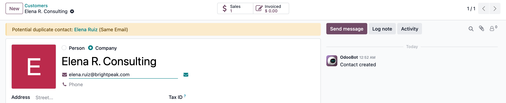
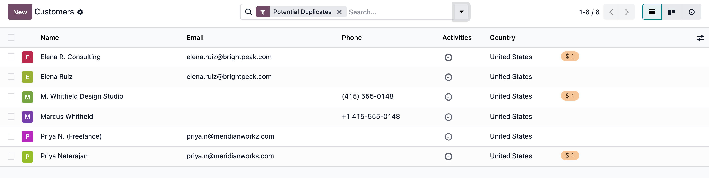

Cleaner contacts
Spot possible duplicate contacts before they cause problems
Get a clear warning when a contact shares an email address or phone number with an existing contact.
Odoo 19 · Community and Enterprise
Designed for everyday contact work
A simple safeguard that fits naturally into the Contacts app.
Matches email and phone
Email matching ignores case and extra spaces. Phone matching recognises the same number in different common formats.
Catches likely email typos
It can flag a familiar domain typo when the email name is the same.
Review all possible duplicates
Use the Potential Duplicates filter in Contacts to find records created through imports, portal signups, or integrations.
No blocked work
Warnings are informative only. Your team stays in control of every contact they create.
What gets flagged
The warning appears only when there is a useful reason to check the contact.
Same email: john@example.com already belongs to another contact.
Same phone: the number belongs to another contact, even if it was entered in a different format.
Similar email: john@gmial.com may be a typo for john@gmail.com.
See it in action
The warning shows up right where your team is already working, and the filter makes existing duplicates easy to find.

The warning on the Contact form. "Elena R. Consulting" shares an email address with an existing contact, "Elena Ruiz" - the banner names the exact match and links straight to it, without blocking the save.

The Potential Duplicates filter. One click in Contacts surfaces every flagged pair at once - same email, same phone in a different format, and a likely domain typo - so nothing found outside the form gets missed.